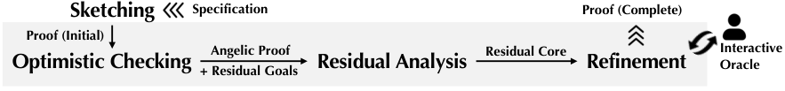
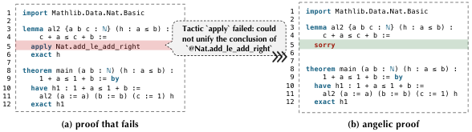

Turns LLM-generated Lean 4/Mathlib proof drafts into verified proofs by replacing failing fragments with sorry, then resolving residual goals via MaxSAT-selected human queries.
Abstract
Large language models (LLMs) can now generate Lean proof scripts that capture the high-level structure of many mathematical arguments. However, these scripts frequently fail on complex theorems: a single missing side condition or misapplied lemma can cause the prover to abort early and discard an otherwise viable proof outline. This paper presents MathEye, a framework that converts imperfect LLM-generated proof scripts into fully verified Lean proofs by combining symbolic reasoning with minimal human interaction. At the core of MathEye is angelic proof checking, an optimistic execution model that replaces failing proof fragments with placeholders while preserving the overall structure of the argument. This optimistic check produces an angelic proof that isolates the exact proof obligations that the LLM fails to discharge. Because these unresolved obligations are often logically interdependent, asking a mathematician to address every placeholder directly is inefficient. To minimize human effort, MathEye performs residual analysis over a proof dependence graph that captures symbol-level data flow in the angelic proof. By formulating obligation selection as a MaxSAT optimization problem, MathEye selects a minimal-cost set of essential obligations whose resolution suffices to complete the entire proof. MathEye presents these essential obligations to the mathematician in ordinary mathematical language and uses the mathematician's answers to automatically reconstruct the complete Lean proof. Experiments on 30 real-world benchmarks across analysis and algebra show that MathEye solves 93.3% of the problems while reducing the number of required user interactions by 55%.
Problem
LLM-generated Lean proof scripts often capture the right high-level structure of a complex theorem but fail on low-level obligations such as missing side conditions or misapplied lemmas. Provers then discard an otherwise viable proof outline.
Approach
MathEye first obtains a Lean proof draft from an LLM (ChatGPT 5.1). It then runs angelic proof checking, which uses structural backtracking to replace failing fragments with sorry placeholders and yields a structurally valid proof whose residual goals are isolated. A proof dependence graph over Lean symbols is built and enriched with inferred mathematical relations. Choosing which goals to ask about is encoded as a MaxSAT/Z3 optimization that finds a minimal-cost core of obligations. These are shown to a mathematician in natural language, and the answers are used to reconstruct a complete proof that Lean rechecks.

Figure 2.2: Framework overview of MathEye .

Figure 4.1: Fault localization and generation of an angelic proof via structural backtracking. (a) Initial incomplete script with a semantic error caused by a misapplied tactic. (b) Structurally valid angelic proof after backtracking replaces the failing proof block with a sorry placeholder.
Results
On 30 graduate qualifying-exam theorems in analysis and algebra, formalized in Lean 4, MathEye solves 93.3% of problems. Its residual analysis cuts required user interactions by 55% compared with querying every residual goal.